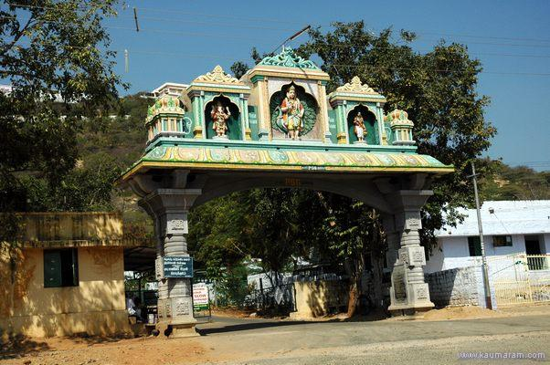

It is an ancient sapphire yielding site. A beautiful Temple dedicated to Lord Muruga near Kangaeyam. This lord is also known as Karthikeya, Skanda among other myraid names. The presiding deity in the sivanmalai is Lord Murugan,Valli and Deivayanai. This murugan temple located in a hill top which can be reached by 450 footsteps or by 2 Kms hill road. This temple premises is calm and clean, which provides soothing serenity to the mind and body. Sri Arunagirinathar a famous Tamil poet has sung the song about this Sivanmalai in his Tiruppugazh.
This temple was build by Sivavakkiyar a famous Sidhhar. It is believed that this temple may be constructed in 12th century. The holy theerthas of sivanmalai are : Agasthya, Anuma, Indra, Brahmananda, Mangala and Veera theertha.
God’s order box is placed before entering mulavar sanctum. Devotees coming to the temple needs to check what object is placed in the order box. After checking this devotees needs to enter the main sanctum. Lord Muruga is appearing to the devotees dream and ask them to place one object in the order box. (Those objects may be Water, Cloth, Sand, Soil and Gold) That person will bring that object to the temple. To find out that information true or false, they will place the flower in Mulavar sannadhi. Once it is confirmed, that object will be placed inside the God’s order box until the arrival of next object. Pooja’s will be performed to that object on daily basis. This procedure is followed for several hundred years.